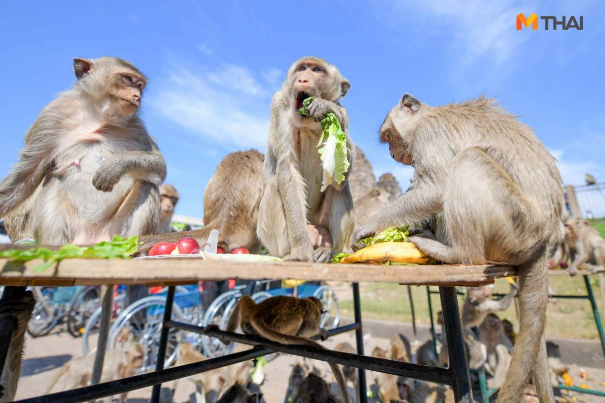

งานเลี้ยงโต๊ะจีนลิง
เจัดขึ้นในวันอาทิตย์สัปดาห์สุดท้ายของเดือนพฤศจิกายน ณ บริเวณศาลพระกาฬและพระปรางค์สามยอด เป็นงานที่มีการเลี้ยงอาหารลิงและมีกิจกรรมต่าง ๆ เพื่อส่งเสริมการท่องเที่ยวและสร้างความสนุกสนานให้กับผู้เข้าร่วมงาน
เจัดขึ้นในวันอาทิตย์สัปดาห์สุดท้ายของเดือนพฤศจิกายน ณ บริเวณศาลพระกาฬและพระปรางค์สามยอด เป็นงานที่มีการเลี้ยงอาหารลิงและมีกิจกรรมต่าง ๆ เพื่อส่งเสริมการท่องเที่ยวและสร้างความสนุกสนานให้กับผู้เข้าร่วมงาน
เป็นประเพณีของชาวมอญบางขันหมาก ที่สืบทอดกันมาตั้งแต่สมัยโบราณ โดยขบวนผ้าป่าจะล่องไปตามแม่น้ำลพบุรี เพื่อสืบสานวัฒนธรรมและส่งเสริมความสามัคคีในชุมชน
จัดขึ้นที่วัดไลย์ อำเภอท่าวุ้ง เป็นประเพณีที่ปฏิบัติกันมาช้านาน โดยมีการแห่พระศรีอาริย์ไปตามเส้นทาง เพื่อให้ประชาชนได้ร่วมสักการะและทำบุญ